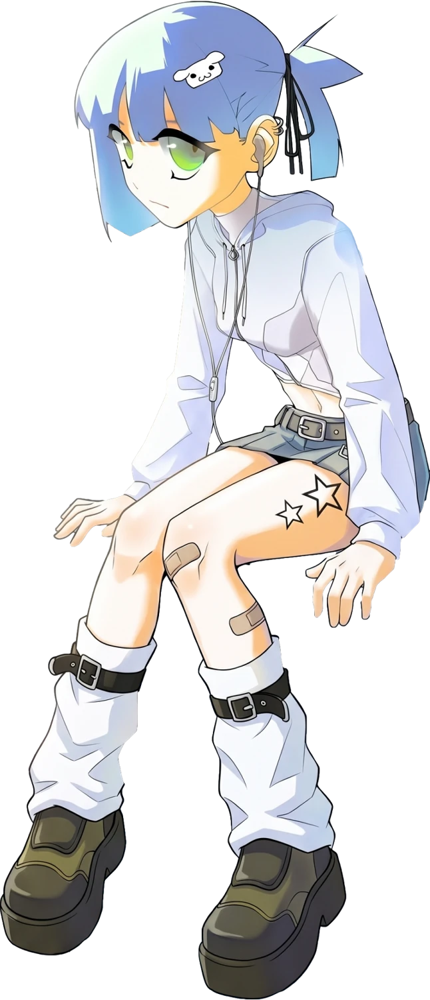

PAVELPAVEL
[ ✕✕ ] alaskaoneheart.site
Video editor
- Age
- 18
- Hometown
- Vladivostok
- Based in
- Philippines
- Local time
- --:-- UTC+8
scroll ↓
vol. 01
02 / red room
fig. a — wall / floor
fig. b — cross
RED
ROOM
ROOM
[ 02 ] — the cube
sit here

GIRLS
[ 03 ] — the wall
look at me
tap, then tilt your phone